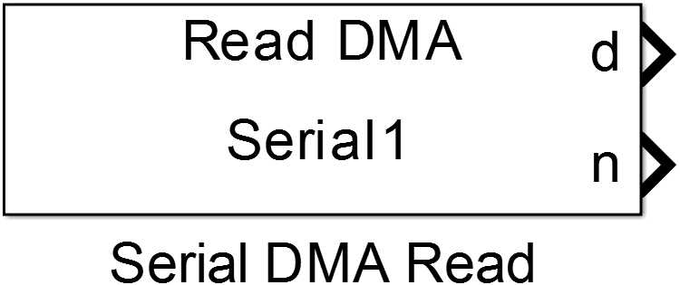
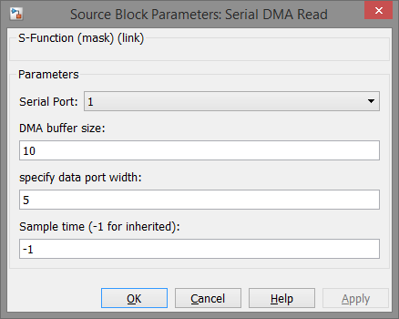

Serial DMA Read
This block receives data from UART transmissions in non-blocking mode.
Library
Targets/STM/DISCO_F407VG
Description
{kind=link}
This block uses DMA transfer to buffer data received via Serial/UART communication. Internally to buffers are used, one is a circular buffer which is used to store incoming data from UART receive register via DMA transfer. If the block’s code is called the available data in the circular buffer are copied to the output buffer which makes the data available to the output port of the block. A second output port is used to propagate the number of new data received since the last call.
This block needs a Serial DMA Config Block in the same model with matching Serial Port values.
Data Type Support
The block’s data output port provides 1-D vectors of uint8 values. The number of data output port provides a uint32 value.
Parameters and Dialog Box
Serial Port
Selects the hardware UART peripheral of an STM32 MCU. The port number are related to the actual USART/UART numbers referred to the datasheet of the used MCU.
DMA buffer size
Configures the internal circular buffer used to store the received data. The configured number is the buffer depth in bytes.
specify data port width
Specifies the output port width of the block’s data port
Note
The internal DMA buffer should be at least as large as the data port width in order to get no data losses.